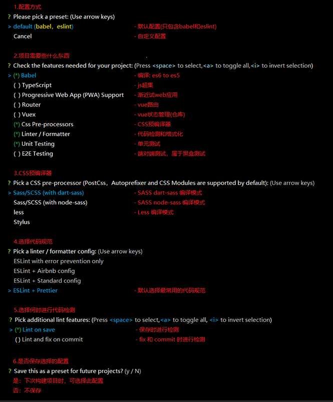
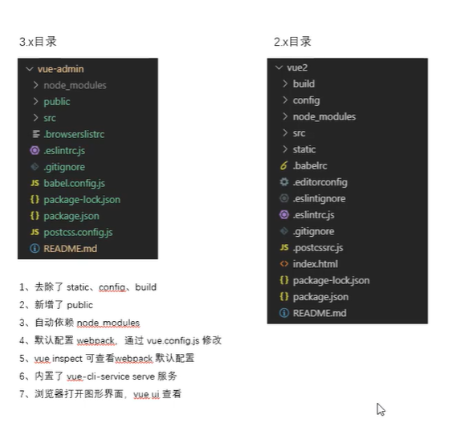
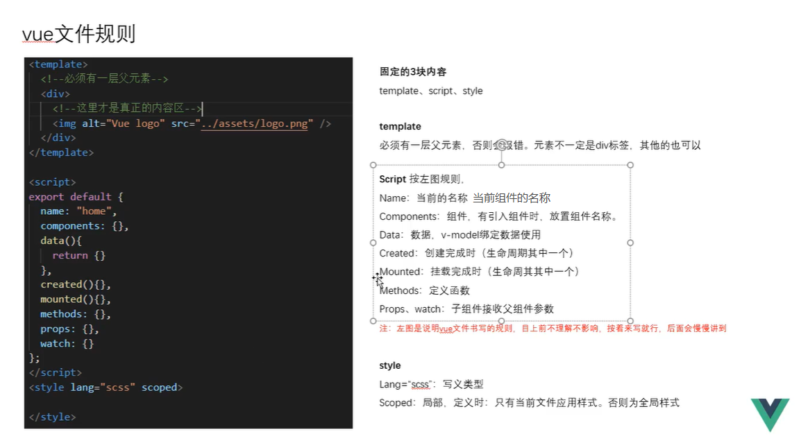

One minute
39 - vue全解(起手式0)
1.使用@vue/cli 搭建项目
-
@vue/cli 是什么？
答：@vue/cli 是 vue 的命令行工具，只要按照官网敲几行命令行就可以新建一个基本的 vue 项目框架 -
安装@vue/cli 与卸载@vue/cli
安装：npm install -g @vue/cli 或 yarn global add @vue/cli
卸载：npm uninstall @vue/cli -g 或 yarn global remove @vue/cli -
@vue/cli 和 webpack 是什么关系？
答：@vue/cli 里面包含了 webpack，并且配置好了基本 webpack 打包规则 -
如何创建一个 vue 项目？
答：通过 vue create vue-demo 命令创建一个新的项目 -
vue 的基本配置信息
 -
进入该目录，
yarn serve开启预览 -
vue
2.x 与 3.x的差异 
2.vue.js 完整版和运行时版本区别
- 完整版 vue.js
同时包含编译器和非完整版本，如果你需要在客户端编译模板，或者使用 template 属性，那么你就需要加上编译器，即完整版
new Vue({
el: "#app",
data(){
return {
n: 1
}
},
template: `
<div>{{n}}</div> //如果是vue.runtime.js就无法编译出来，没有编译器
`
})
- 运行时版本 vue.runtime.js
运行时版本在 HTML 中差值表达式和 template 就无法编译出来(没有编译器)，只能通过 render 函数来渲染
import Demo1 from "./Demo1.vue";
new Vue({
el: "#app",
render(h){
return h(Demo1) // h是createElement缩写
}
})
- render 函数的初步了解
1.在 render 函数方法中，有个默认 h 参数(是 createElement 的缩写，类型是一个函数)
2.函数中第一个参数可以是(String | Object | Function)
3.总结完整版 和 运行时版本
1.虽然有两个版本，但现在前端基本不会去用完整版，平时使用都是代码体积小的运行时版本，因为编译器的脏活交给 vue-loader 去做就好
2.保证用户体验，用户下载的文件体积更小，但只支持 h 函数
3.保证开发体验，开发者可直接在 vue 文件里面学 HTML 标签、差值表达式，而不用写 h 函数
4.活让 loader 做，vue-loader 会把 vue 文件里的 HTML 转换为 h 函数，这样我不用写太多麻烦的，运行时版本就可以做到和完整版一样的事情，还更节约文件大小，提升用户体验
4.Vue 单文件组件

<template>
<div>
{{n}}
<button @click="add1">+1</button>
</div>
</tempate>
<script>
export default{
// 1.如果是vue单文件这里data必须是一个函数，并且要return
// 2. 这样能够避免引用了同一个内存地址，造成对象共用
data(){
return{
n: 1
}
},
methods: {
add1(){
this.n += 1;
}
}
}
</script>
<style scoped></style>
180 Words
2020-02-19 08:00 +0800
Read other posts